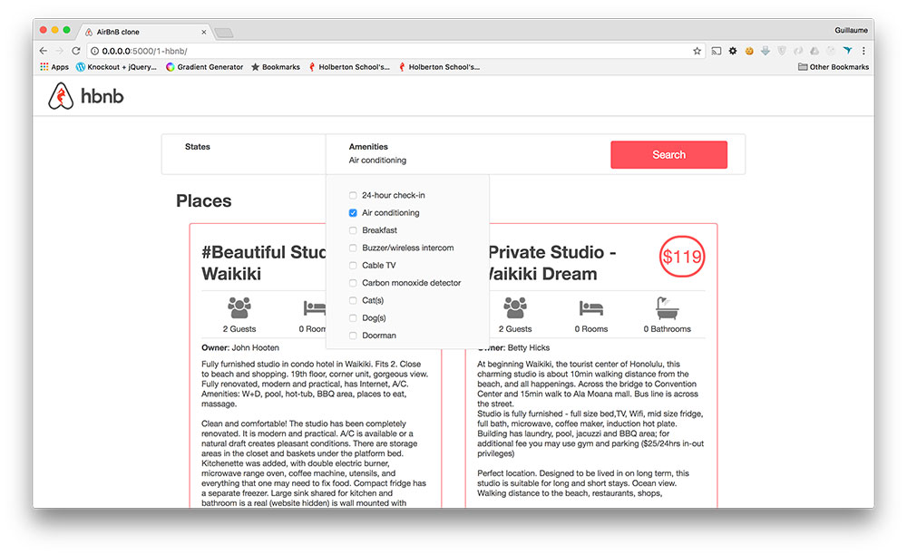

ABOUT MEI am Anna TAKASU
- - Eldest of two sisters
- - Six times in my life I have changed my place of residence.
- - From a mediocre high school to a prestigious university
- - Late bloomer
- - Not forget to feel gratitude arround me
- - From unsuccessful saleserson to top salesperson
- - High EQ (emotional intelligence) based on diverse experiences
Motivation
For me, what motivates me in software engineering is sense of accomplishment at the moment a program works and the communication with my colleagues.
I think programming is a chain of complicated things.
Unexplained errors when installing the software and systems necessary to run the program, error messages that you see for the first time, bugs that cannot be easily identified, unintended bugs, the list goes on and on.
I thought I was good at this job and loved it, but for the first few months of my current school I cried every day because I was worried that I wouldn't be able to finish my assignments by the due date.
It has been a year since then and I am still here.
Why?
Because I was able to learn, helping each other with my colleagues, and I was also growing.
I know that software engineering is a job where you can't learn skills passively, so I try to find solutions on my own as much as possible, but I get frustrated and want to give up when things I'm struggling with on my own don't get resolved all the time.
At times like that, having a colleague who listens to me and a staff member who tries to resolve with me puts me at ease and encourages me to try a little harder.
I also like the feeling I get when a program works which did not work for a long time, as if the last piece of the puzzle has fit.
No matter how much I think it might not be for me anymore, that feeling has motivated me to go for the code again and again.
I am sure that this accomplishment-driven personality will serve me well in my software engineering career. And if I do end up working, I will be willing to help a colleague in need, just as I was happy by the same thing.
Before Holberton
I have had a variety of occupations before coming to this school.
They include private school teachers, restaurant clerks, and salespeople. Most of my work involved working with people. I would like to share an episode from my sales job where I learned the most.
To do this job, I left my parents' home near Tokyo, where I had lived all my life, and lived and worked alone in Sapporo, the most northern city in Japan.
However, as soon as I started working, I realized that the job was not for me at all.
I wanted to quit as soon as possible, but in Japan, frequently changing jobs gives a bad impression, and since I had spent a lot of money to move, it was not easy to go back. Quitting the job was not an option.
After a while, I was reassigned to an area with the lowest market, and my team was also changed to accommodate this change.
It was like a demotion in effect, but this was the turning point for me.
Unlike my previous boss, my new boss guided me based on how customers thought.
At the time, I was following the script for any person and offering a contract to anyone who was interested, but the way my new boss taught me to approach each person differently.
It was a simple method of thinking about what the customer really needed and what they really needed, and then making a proposal.
My sales work was mainly route sales, and the trust and appreciation of customers was directly linked to the amount of orders I received, and my sales rose.
I was not that interested in being praised as a top salesperson, but I was proud to think that high sales were an indication that I was valued as a person by my customers.
At first, I had done this job for a living, but I realized that I was doing it because I wanted to be appreciated by more people.
There are two things I learned from this experience.
The performance can change depending on his colleagues.
The other is that work done with consideration for others will result in sales.
As a result, I was able to contribute to the organization in terms of sales, and working here was an experience that I can call an asset to myself.
Holberton
I chose this school because I wanted to learn practical knowledge.
Most of the schools I have attended in the past were designed so that students could graduate as long as they paid attention to the following three points: listening to classes properly, attending classes every day, sometimes submitting assignments on time, and not scoring too low on tests, but this school was special.
There is a very high barrier between "being able to understand code written by others and being able to write code as others instruct", and "being able to think and code on your own".
The former is what you can learn if you attend school and take the proper classes, but the ability to think and code on your own is not a skill you can acquire at any school.
In this school's curriculum, students are given only the minimum required materials and a lot of assignments, and the rest depends on individual effort to achieve.
There is no teacher who can teach every student in detail.
It is a school that relies on individual ability, asking for help from staff and classmates as needed only when you are completely unable to figure it out on your own.
I have seen a number of people quit.
There were more than 10 classmate in my class when I first entered the school, but they were reduced to less than half after three months.
It is a tough school, but I think the school culture well reflects the unspoken common sense in the information field that a passive attitude is not an asset.
What I learned at this school, besides coding, is to always be active.
When working with others on a project, someone has to steer to make progress, and bugs and errors will not go away by themselves if left unattended.
Even when an error or bug is fixed, if I don't figure out what went wrong and why it was fixed, the same error will probably occur again.
I learned at this school that it is very important to have an appetite for knowledge and to be proactive in asking for help when in trouble.
Project Work
The project to create my own printf function was the first difficult project I experienced. I decided to do this project because I thought I could make the most full use of the knowledge I had learned up to that point. This code allows you to use printf functions even under the restriction of not using printf, and you can see what kind of process printf is working through. The difficulties with this project were that a single character error would cause an immediate error, and the fact that it was a large project with multiple files made debugging difficult. This experience also helped me develop the ability to think about what it takes to write a program from scratch.
As Software Engineer
I am a patient software engineer. What I am best at is endurance games.
If I were to compare my life to running, I would say that I cannot finish first in the 100-meter run, but I can finish a long marathon.
Recently, I was able to make a program that didn't work work work by debugging and debugging a program that I didn't understand at all.
I am good at doing things little by little and steadily, and I believe that if I continue to do this, one day I will be able to make something much bigger than what I can make now.
My greatest characteristic is that I have many different backgrounds.
Background is something that changes depending on the environment in which you live, such as the jobs you have had, the area you have lived, etc. I have changed my place of residence six times in my 32 years of life, each time to a completely different place for my parents' work or my own work. I also have to create a community of friends and other people from scratch. The last time I changed my place of residence was when I moved from a regional city in Japan to France, which was the most difficult. Not being able to communicate is the most stressful thing of all. I am always unable to speak intelligently enough to correspond to my natural mental age. Moreover, even if I study french, I can't master soon.
But I came to France because I thought I could do it.
I overcame more difficulties than normal person, so I am proud of my patience.
When I took the university entrance exam, I was accepted into a prestigious university where almost no one from my high school was accepted. I also changed from the bottom of the sales career to the top sales person.
This is because I know that through steady effort, I can succeed.
I wanted to go to a school that was as rigorous as possible, like this school, because I thought I would be able to do it because I know how to deal with stress.
I am motivated in my work as a software engineer by the small daily successes.
Working as a software engineer takes a lot of nerves and patience, as sometimes the smallest mistake can take several days.
My perseverance will definitely help me being good software engineer.
Works
_printf project
Source code: https://github.com/NeoV0id/printf#readme
I worked with classmates on the function _pritnf, which has the same functionality as printf implemented in the standard C library.
Like printf, it can output a string by setting a string as the first argument and a format specifier as the second and subsequent arguments.

Airbnb clone project
Source code: https://github.com/Anna78990/AirBnB_clone_v3#readme
Working with classmates, I created a dynamic simple website that has the same functionality as Airbnb, a private lodging booking site.
You can sort the list of accommodations by city name, etc., and find out what reviews each accommodation has and what amenities are in place.

_malloc projects
https://github.com/Anna78990/holbertonschool-malloc#readmeI created a function that has the same functionality as malloc, a function in the standard C library. As with malloc, by putting the size of memory to be allocated dynamically in the argument, the function returns the address of allocated memory.
Do you know more about Anna?
View Anna's ResumeView Anna's Github
Contact
Twitter : @KinuwaReeves
LinkedIn: LinedIn of Anna